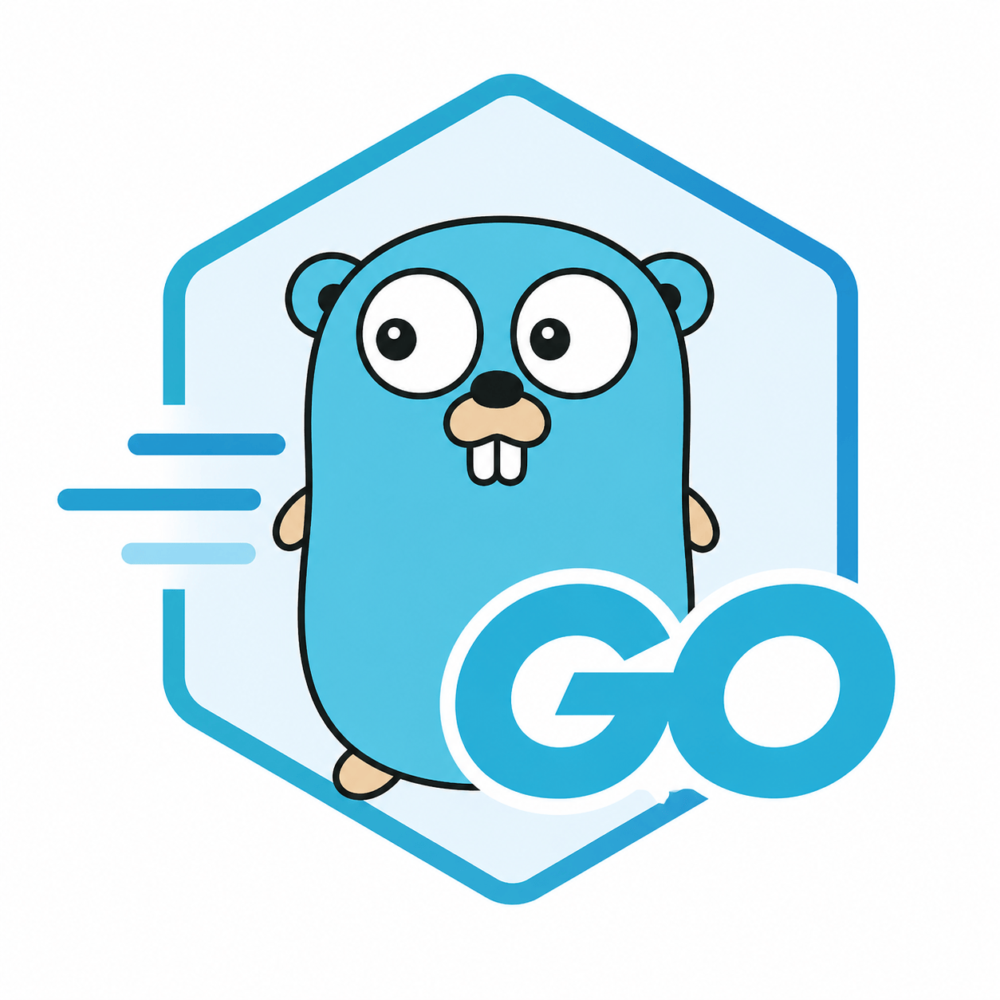

Základní příkazy
| 🏷️ Sekce | 🛠️ Příkaz Go | Význam / Popis |
|---|---|---|
| 🏗️ Základní příkazy | go run main.go |
Spustí Go program (bez kompilace do binárky) |
go build |
Zkompiluje aktuální projekt do spustitelného souboru | |
go build . |
Zkompiluje všechny soubory v aktuálním adresáři | |
go install |
Zkompiluje a nainstaluje balíček do $GOPATH/bin |
|
go clean |
Odstraní dočasné soubory a binárky | |
| 🧪 Testování a formátování | go test |
Spustí testy v aktuálním projektu |
go test -v |
Spustí testy a vypíše podrobné informace | |
go fmt ./... |
Naformátuje všechny Go soubory v projektu podle standardu | |
| 📦 Správa závislostí (moduly) | go mod init název |
Inicializuje nový Go modul (vytvoří go.mod) |
go mod tidy |
Odstraní nepoužívané závislosti a přidá chybějící | |
go mod vendor |
Zkopíruje všechny závislosti do složky vendor |
|
go get balíček |
Přidá nebo aktualizuje závislost (balíček) | |
| 📚 Dokumentace a prostředí | go doc |
Zobrazí dokumentaci k balíčku nebo funkci |
go env |
Vypíše aktuální nastavení prostředí pro Go | |
go version |
Zobrazí verzi nainstalovaného Go |